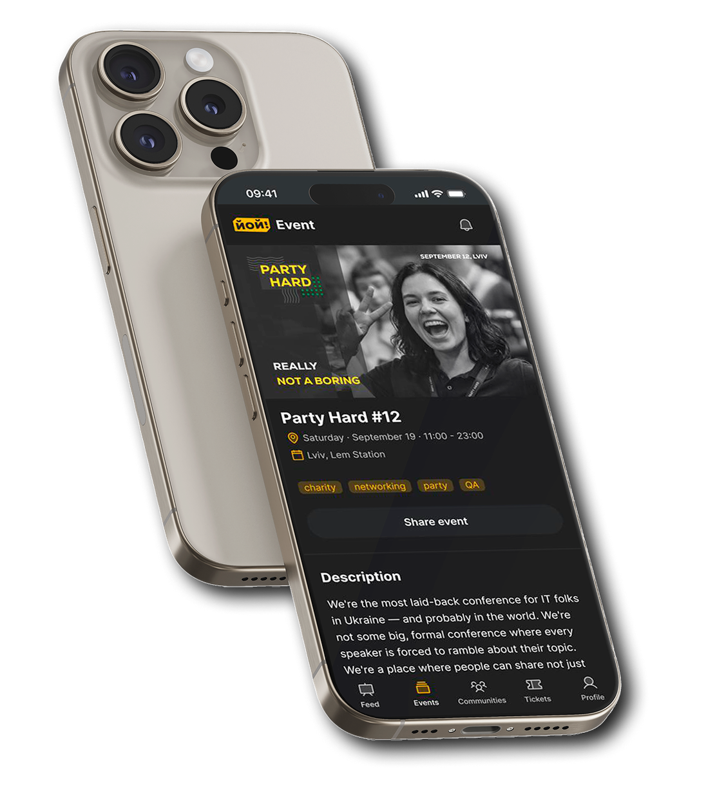
YOY! Events
A product for events and communities, built technology-first. I rebuilt it around what the organizer actually needs to do.
- Role: UX Designer
- Client: Product Owner, also the developer building it
- Tools: Claude, Figma MCP, FigJam
- Case status: MVP, product exists in web version
Three facts instead of metrics
These aren't product metrics (no conversion tracking was run) they're objective facts about what was built, an honest way to show scale without invented numbers.
UI Kit built with Claude and Figma MCP on the Shadcn design system, meeting WCAG 2.2 AAA
14 screens in the organizer flow, including 4 conditional states for the visibility step
Found 4 payment-provider integration defects invisible when working within a single role, the fix for the main one is shown below
Overview
Yoy! Events is a Ukrainian platform for events and communities for the IT/business scene: creating events, selling tickets, managing communities, networking. The core role is the organizer: the one who fills the platform with content. Without them there are no events, no tickets, no communities.
The product was built engineering-first, screen by screen, driven by technology rather than the user's task. The hardest node is event creation: this is where the organizer either stays or leaves.
My Scope
Source:
I led the project solo, covering research, information architecture, user flows, design system, UI design, and developer handoff. I was responsible for taking the experience from an initially feature-focused concept to a structured system ready for implementation.
Constraints:
The project came with several constraints that directly shaped the design decisions. There was no access to users, so no direct interviews were possible; instead, I used feedback from analogous platforms and conversations with the client, who is also an event organizer. One designer covered the entire process, from research and system design to UI and handoff. The client initially thought in terms of screens and features rather than an underlying architecture, which required deeper conversations to separate communities, events, and networking into distinct entities. Implementation also runs through Figma MCP, meaning the developer generates code directly from the design, so an untokenized design would result in hardcoded code.
Before:
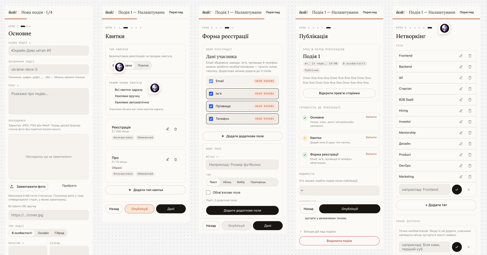
The Challenge
The client didn't come with «make it pretty». Three things: the product was fragmented, built without end-to-end logic. Creating an event was the hardest node, because everything else starts from there. Networking was pitched as the main differentiator, but in practice it was a red button leading to a dead-end page.
A heuristic audit of the live MVP confirmed the problem was systemic, not isolated bugs: overloaded navigation, networking as a dead-end function disconnected from the event, inconsistent patterns across sections of the product.
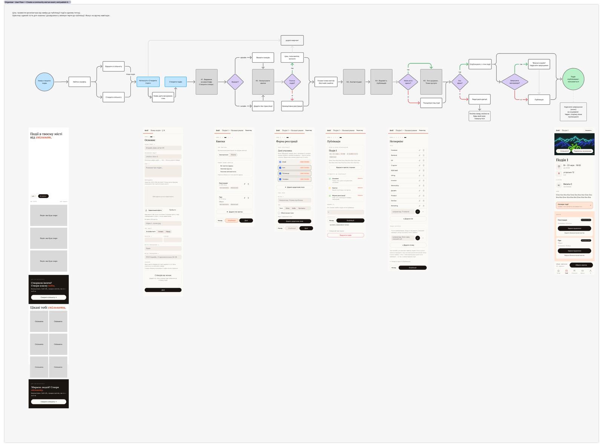
There was a lot that didn't make sense, I had to sit down with the client and go through every step by hand, matching screens and mapping the actual user flow to understand how it currently works.
Research
Went through the live product, findings: fragmented flows, networking as a dead end, inconsistent patterns across sections.
Analogs and benchmarking
Three patterns for how services open ticket sales:
In the per-ticket pattern, the organizer can't see the full sales picture — it's scattered across cards. That's what led to showing an explicit sales-strategy choice on one screen (SCR-05).
JTBD and gaps (hypothesis)
Built JTBD for 3 personas overall: admin, manager, and attendee. Together with the client we agreed to focus on the admin persona, so this case centers on the admin flow. For that persona, the hypothesis is that the biggest gap between importance and satisfaction is in ticket sales (10 vs 3) and in getting people to attend (9 vs 3). This is a hypothesis that needs interview validation, but it was adopted as the MVP decision.
How I Approached It
I didn't overthink it: simple, native solutions that most users already understand. I didn't even significantly change the user flow or information architecture. I just applied standard UX patterns that split the path from creation to publishing into steps with core features, instead of one complex form with tangled navigation.
The weak, templated UI and systemic bugs in the initial version didn't just create cognitive load. They genuinely confused users, turning event creation into a maze.
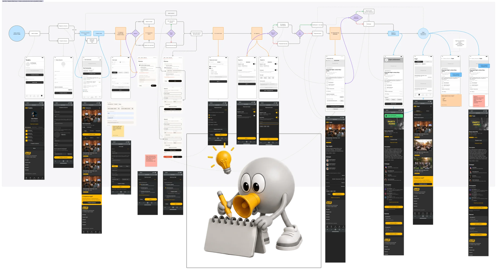
After:
Key Decisions
Each decision below solves for more than just a «convenient interface» or «nice UI» — it builds a logical structure users can actually follow.
Tickets: the builder, separate from managing sales
Problem
The organizer has to both configure tickets and manage their sale. In analog products, these two tasks are mixed into one screen.
Solution
The creation wizard has no «open the wave» action — it only builds the structure. Managing sales is moved to a separate screen after publishing.
Why
The «am I configuring or already managing» confusion is the main source of errors in Eventbrite and Tito, per the competitive analysis.
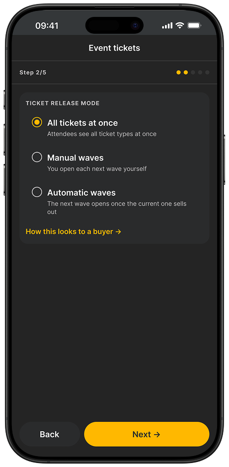
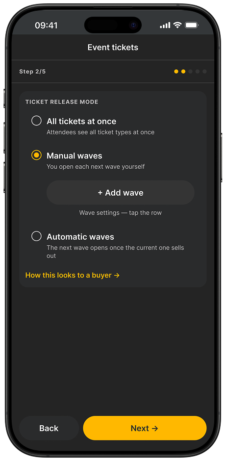
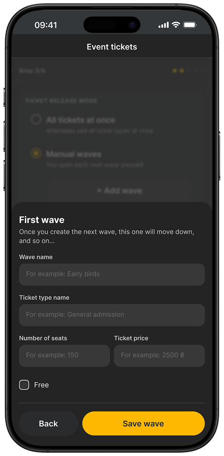
Networking: from a dead end to a layer inside the event
Problem
The stated main differentiator was a red button leading to a separate page disconnected from the event. Users landed there without understanding what to do.
Solution
Networking became a configurable layer inside the event, which the organizer turns on during setup. Two layers: a discussion thread and «who's going» with the ability to connect.
Why
A thread alone doesn't close a one-on-one connection or save contacts after the event. Both layers are needed, or the differentiator stays a declaration.
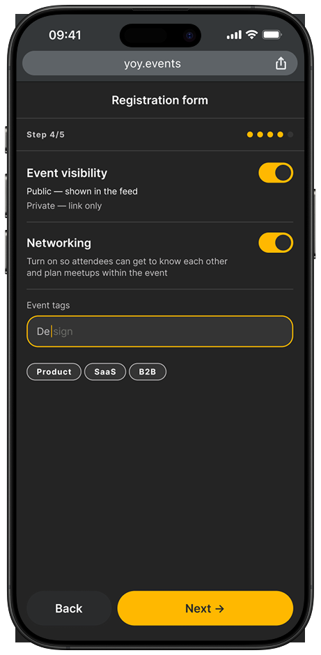
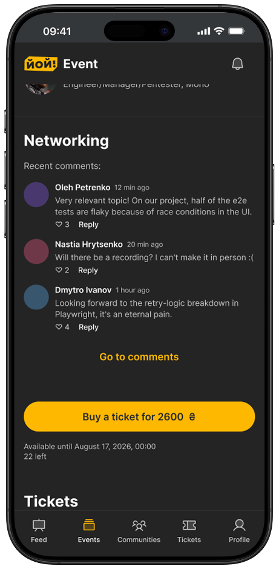
Core Features
The organizer's path from an empty state to a published event, step by step.
Creating a community
A community as a container, not a registration form. Manager invite included right away.
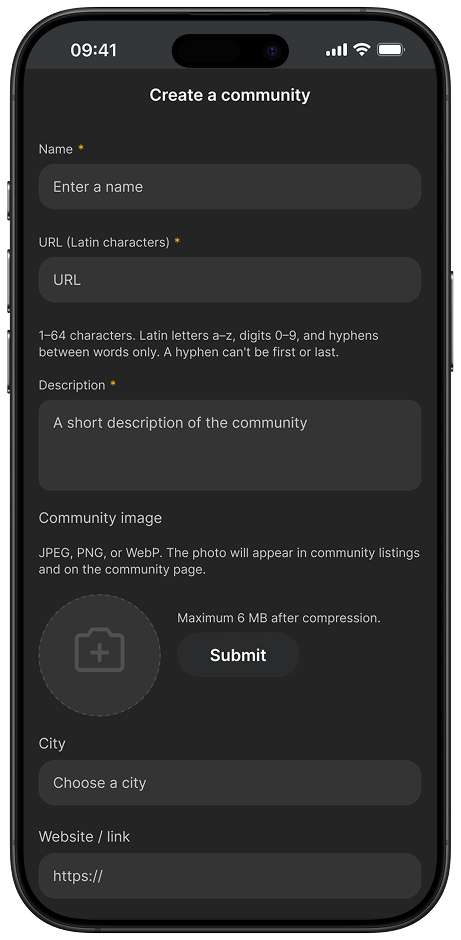
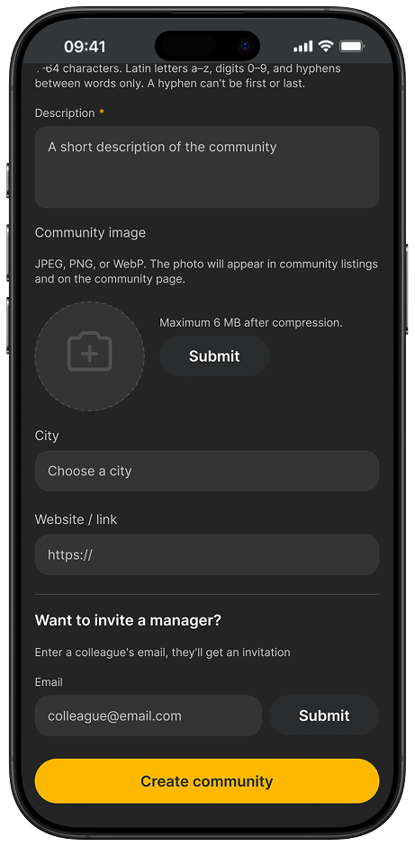
Community created
Success doesn't end the journey, it leads to the next action: creating a first event.
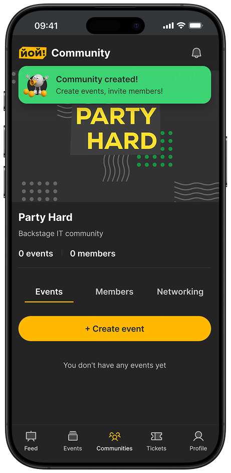
Basic event information
Format (offline / online / hybrid) changes the following fields: location or streaming link.
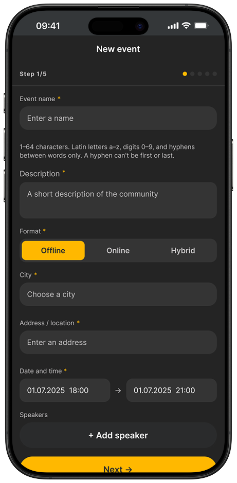
Fields to fill in
The organizer decides what data to collect. Minimal by default.
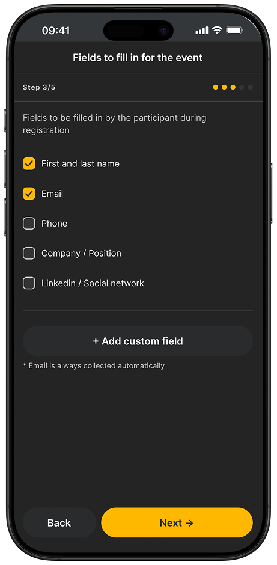
Preview
The organizer sees exactly what the buyer will see. Not a separate screen, the event page seen through a different role.
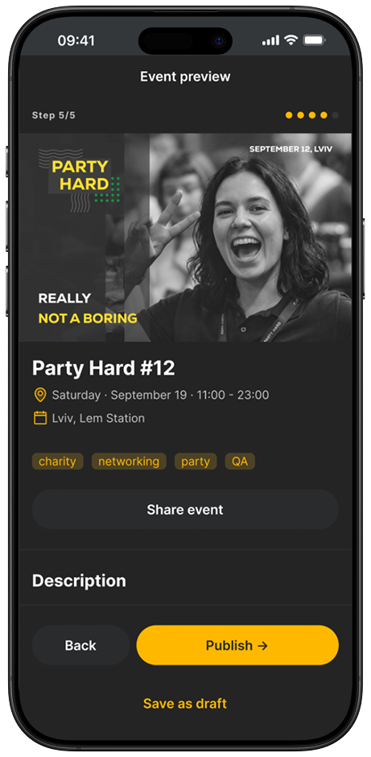
Event published
The same page, in admin mode. The role changes in the link, and that's exactly where the organizer's path becomes the attendee's path.
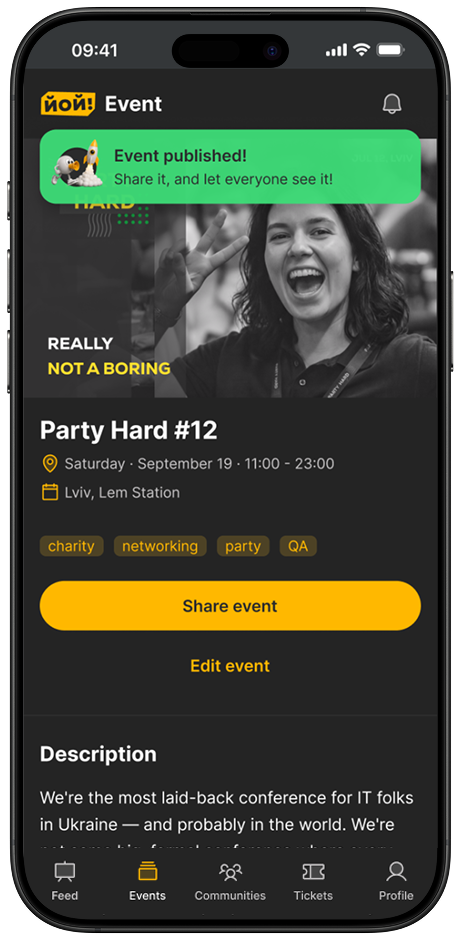
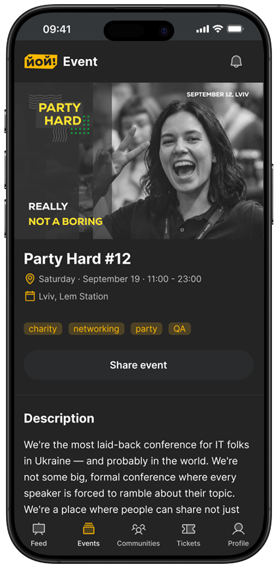
UI-Kit
The UI Kit was generated with Claude and Figma MCP on the Shadcn library. You can see it as it actually was, without trying to make the AI output look more polished than it was. I made a few adjustments afterwards, mainly refining components, spacing, and visual details. Baseline WCAG 2.2 AAA compliance was checked with A11y. I reviewed the result, adjusted it, and applied it in the design, this is the tooling part, not the core work.
One principle on its own: don't multiply visually different components for the same role. One component with variants, hierarchy through size and weight, not separate styles.
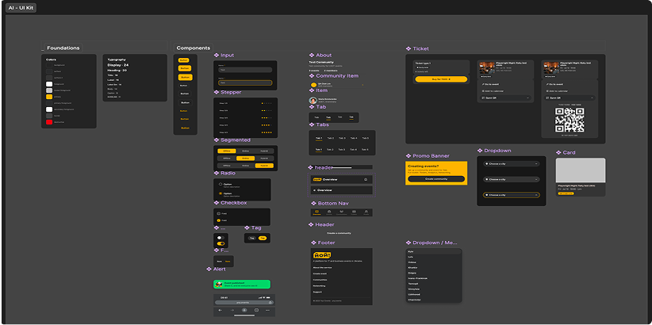
Results
Qualitative
The client got a scalable design system with tokenized components that the team can extend independently, a 14-screen organizer flow ready for development, and a documented payment-provider integration defect identified before it could cause chargebacks, enabling them to create new templates, scale the UI to new screens, and avoid critical payment issues before release.
Objective
A design system with 30+ components built on 12 tokens, with contrast calculated and every text pair reaching at least 8:1 for AAA-level accessibility, alongside a 14-screen organizer flow covering four conditional states for the visibility step.
My focus: the mobile app. The client's MVP currently prioritizes the web version.
Open Real ProductWhat I'd Do Differently
I'd start with live interviews, not just analogs and client feedback, the JTBD scores are a hypothesis right now, and I say so honestly, but validation would have taken the same few days at the start rather than after the architecture was already set. I'd also revisit work prioritization earlier: the product closed the two jobs with the smallest gap before I managed to show the client the full JTBD picture, had it been on the table from week one, the order might have been different.
Reviews:
Ready to architect your next product?
Open for complex challenges and leadership roles. Select time to call and hire me below.
Book a Call